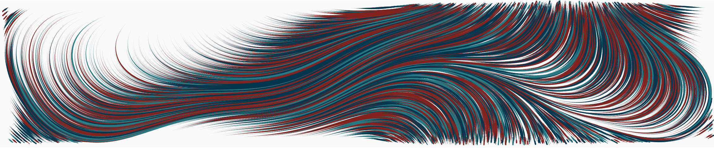

Research
Overview
My research sits at the intersection of statistical theory and computer science methodology and is part of the modern ascendancy of mining “big data” to produce fundamentally novel science from complicated datasets. Specifically, I seek to illuminate the role played by the nature and quantity of regularization as a tool for improved scientific understanding.
Through this lens, my research can be divided into four intersecting areas: (1) computational approximation methodology, (2) model selection, (3) high-dimensional and nonparametric theory, and (4) applications related to these. My work explores and exploits the connections between these areas rather than approaching them separately—my contributions have been developed out of the pressing need to justify methodology as implemented in applications rather than in a vacuum devoid of empirical motivation. My research program seeks to generate statistical guarantees for the procedures that applied researchers use while also developing methodology for complicated, high-dimensional problems. Within this context, much of my work involves what is referred to as regularization—the process of mathematically balancing complex but meaningful scientific models with a preference for simple fundamental structures.

Recent papers and preprints
Associative White Matter Tracts Selectively Predict Sensorimotor Learning
Vinci-Booher, S, McDonald, DJ, Berquist, E, Pestilli, FTechnical Report, 2023
Less is More: Balancing Noise Reduction and Data Retention in fMRI with Projection Scrubbing
Pham, D, McDonald, DJ, Ding, L, Nebel, MB, et al.Neuroimage, 2023
Empirical Macroeconomics and DSGE Modeling in Statistical Perspective
McDonald, DJ, Shalizi, CRTechnical Report, 2022
Sparsegl: An R Package for Estimating Sparse Group Lasso
Liang, X, Cohen, A, Heinsfeld, AS, Pestilli, F, et al.Technical Report, 2022
Smooth Multi-Period Forecasting with Application to Prediction of COVID-19 Cases
Tuzhilina, E, Hastie, TJ, McDonald, DJ, Tay, JK, et al.Technical Report, 2022
Slides for recent talks
Markov switching state space models for uncovering musical interpretation
COVID-19 Modelling and Forecasting in the US and Canada: A statisticians perspective
Algorithms for Estimating Trends in Global Temperature Volatility
Regularization, optimization, and approximation: The benefits of a convex combination
Matrix sketching for alternating direction method of multipliers optimization
Predicting phenotypes from microarrays using amplified, initially marginal, eigenvector regression